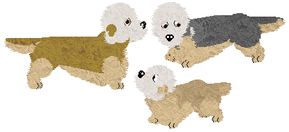
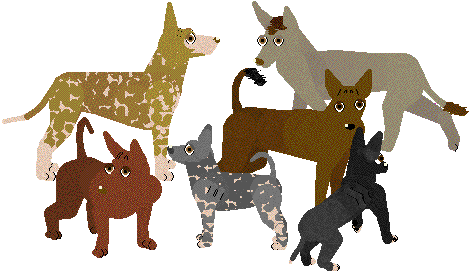

VPZ Research Center
| homeCaninez
All my breedz are proudly made from the original PFM breedz! "From scratch." ;-) Sounds I use are either in game, compiled by me, or from Carolyn, whose brilliance is a great inspiration, and her patience is astounding.
These are breed files that allow you to adopt petz from the Adoption Center in the game. Do not directly link to my files, and if you distribute them, please give me credit. Breedz are listed alphabetically.
.dog files need to go in Resource\Dogz The files are zipped, so you need an unzipping program such as WinZip to use them. You do not need any other breedz files or anything to use these. Sound files are available when possible. If sounds aren't available, they may be eventually, but the breed is currently silent (not cat/dog sounds). Some of the feline/canine breedz have internal sounds; others are soundstripped to keepthe files small (you can download the external sounds from Carolyn's Creations.)
***If only one file is available, it is a "unibreed" file that will work in Petz 3, 4, and 5!
If you have trouble downloading, right-click the link and choose "Save Target As..." All the files should work. (Although I can't verify Petz 3 or 4 downloads, since I don't use those games.) Sometimes files are interrupted in download, and you get corrupted messages, especially for large files and especially if you use dial-up. TRY AGAIN LATER.
| Domestic Dogz |
|
Afghan Hound (PKC Accepted) Download from Vickie's Show Breedz (internal sounds) |
|
American Eskimo Dog (PKC Accepted) Download from Vickie's Show Breedz (internal sounds) |
|
American Indian Dog (aka "Spirit Dog") (This is a real breed but is not recognized by any major clubs, so it is most likely not elligable for acceptance in the PKC or DKC.) Angelfire *** Download *** (internal sounds) |
|
Appalachian Greyhound (This is a real breed but is not recognized by any major clubs, so it is most likely not elligable for acceptance in the PKC or DKC.) *** Download *** (internal sounds) (dark brindle fur file is from Nova with permission) |
|
Bolognese (PKC Accepted) Download from Vickie's Show Breedz (Uses "poodle" sounds from Carolyn's Creations.) |
|
Boston Terrier (PKC Accepted) Download from Vickie's Show Breedz (internal sounds) |
|
Chart Polski (PKC Accepted)  Download from Vickie's Show Breedz (internal sounds) |
|
Czechoslavakian Wolfdog (PKC Accepted) Download from Vickie's Show Breedz (internal sounds) |
|
Dalmatian (PKC Accepted) Download from Vickie's Show Breedz (internal sounds) |
|
Dandie Dinmont Terrier (PKC Accepted)  Download from Vickie's Show Breedz (internal sounds) |
|
Grand Basset Griffon Vendeen (PKC Accepted) Download from Vickie's Show Breedz (internal sounds) |
|
Greyhound (PKC Accepted) Download from Vickie's Show Breedz (internal sounds) |
|
Italian Greyhound (PKC Accepted) Download from Vickie's Show Breedz (internal sounds) |
|
Karelian Bear Dog (PKC Accepted)  Download from Vickie's Show Breedz (internal sounds) |
|
Lurcher "Lurcher" isn't a breed -- it is more of a category of dog. It refers to sighthound mixes, preferably mixes that are especially hardy and do the work of a sighthound. Usually the mix includes a working or pastoral breed, and they ae usually greyhound size. Lurchers were originally bred by gypsies for poaching small game. The purpose of such dogs were to be keen hunters, keeping food on the table of their owners but at the same time not *look* like a purebred sighthound which were illegal for anyone besides royalty. Prized lurchers were very similar in build to greyhounds or deerhounds, but for your average man, a longhaired working dog that could also hunt was more practical and less likely to alarm the authorities. The word lurcher is derived from the "lur" which is romani for thief. Lurchers are swift canine outlaws. (Read more at Wikipedia.) In this file, billions of possibilities exist. (You can see some examples of these variations here.) Dogz from this file are likely to be showable in companion shows at PKC. Apply for C-registry as "Mixed Breed." *** Download *** |
|
Miniature Pinscher (PKC Accepted) Download from Vickie's Show Breedz (internal sounds) |
|
ShelterDogz Every year, millions of dogs are euthanized in shelters in the USA, simply because homes are not available. These dogz have done no wrong but are simply the result of overpopulation, lack of spaying/neutering, and intentional and unintentional overbreeding. While they have no "papers," shelter dogs make wonderful pets, as well as doing rescue work, police work, and therapy work. Movies and TV frequently use dogs from shelters as their "stars," as many are very intelligent and eager to please. Shelter dogs can be purebred or mixed, and are the best place to begin any search for a canine companion. In this file, literally hundreds of billions of possibilities exist, as in real life. (You can see some examples of these variations here.) I recommend you do not search for a specific dog but rather take whatever comes to you from the Adoption Center, like the puppy you found by the road or the one that followed you home... Pssst... if you like these, check out Nova's Mixed Breed for Dogz or my Moggiez for catz! *** Download *** |
|
Shiba Inu (PKC Accepted)  Download from Vickie's Show Breedz (internal sounds) |
|
Shikoku (PKC Accepted) Download from Vickie's Show Breedz (internal sounds) |
|
West Siberian Laika (PKC Accepted) Download from Vickie's Show Breedz (internal sounds) |
|
Xoloitzquintle (PKC Accepted)  Download from Vickie's Show Breedz (internal sounds) |
| Wild Dogz |
|
Dingo Angelfire *** Download *** (internal sounds) |
|
Fennec Fox Angelfire *** Download *** (internal sounds) |
|
Gray Fox *** Download *** (Uses "Dachshund" sounds from Carolyn's Creations.) |
|
Wolf My fist SCP-swapped breed (Dalmatian with Scottie tendencies)! There are many variations (including two coat types, tail types, etc.). See this page for details. Keep in mind that this does overwrite and can be used interchangably with my fantasy "Manen" wolf file available here. *** Download *** (internal sounds) |